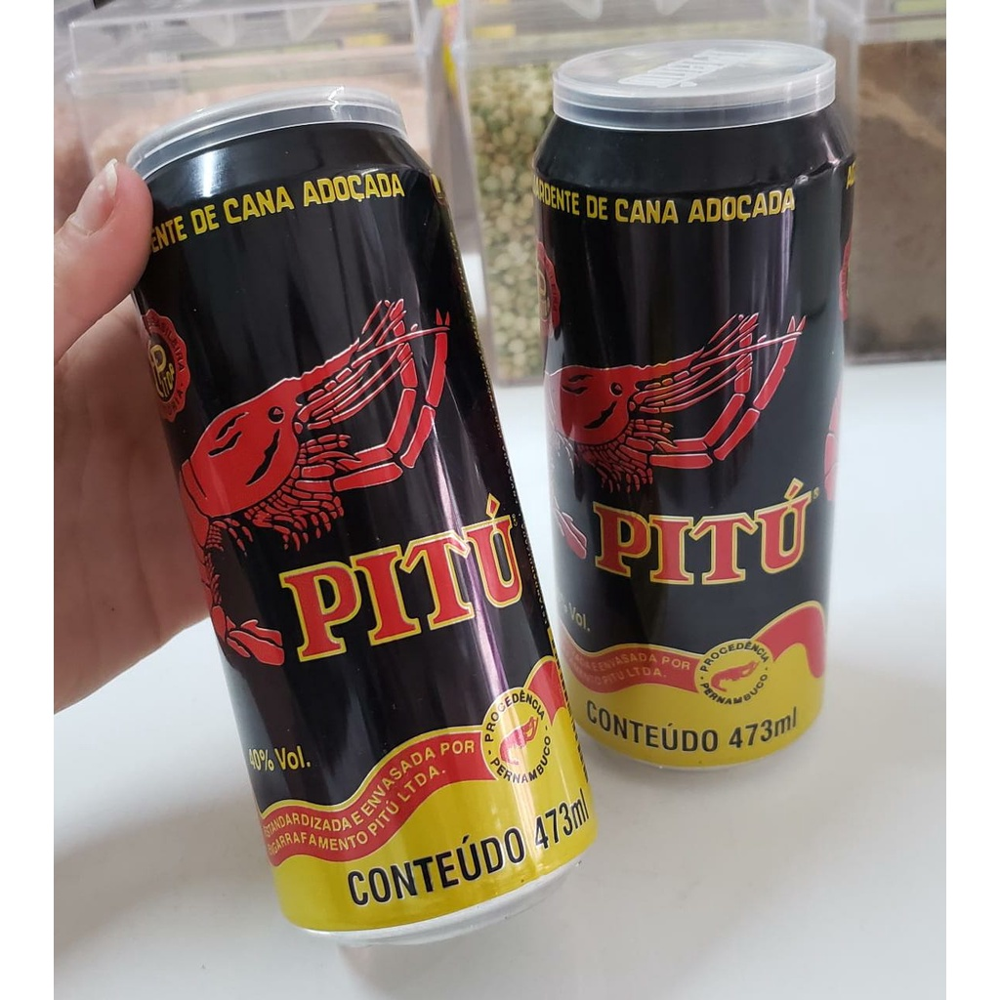

Popularmente atende por vários nomes: Pitu, o mais conhecido, ou Lagosta-de-água-doce; Lagosta-de-São-Fidélis.
O pitu tem a distinção de ser o maior camarão de água doce nativo do Brasil, podendo chegar a quase 50 cm de comprimento e pesar mais de 300g. Tem corpo liso, e grandes garras.
Os adultos têm uma coloração marrom escura com manchas mosqueadas de cores mais claras.
